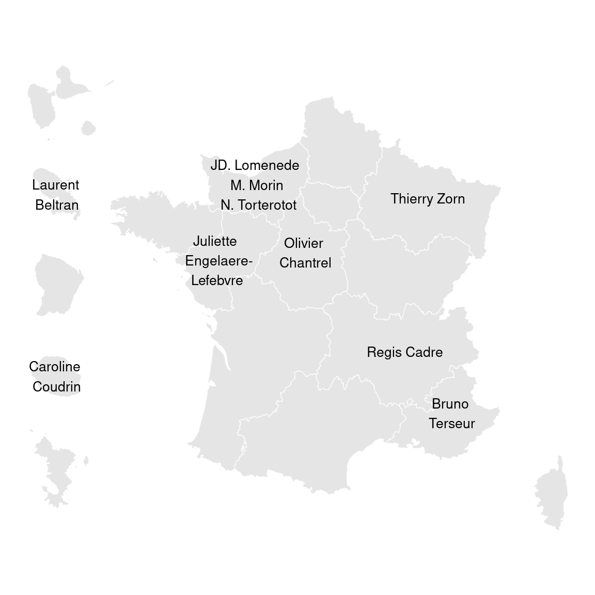

Préparer ses données avec R et le Tidyverse
23 March 2023
Chapitre 1 Introduction

Crédit photographique Sébastien Colas
1.1 Le parcours de formation
Ce dispositif de formation vise à faire monter en compétence les agents du MTECT (Ministère de la Transition écologique et de la Cohésion des territoires) et du MTE (Ministère de la Transition énergétique) dans le domaine de la science de la donnée avec le logiciel R. Il est conçu pour être déployé à l’échelle nationale par le réseau des CVRH (Centre de Valorisation des Ressources Humaines).
Le parcours proposé est structuré en modules de 2 jours chacun. Avoir suivi les deux premiers (ou disposer d’un niveau équivalent) est un pré-requis pour suivre les suivants qui sont proposés “à la carte” :
- Module 1 : Socle - Premier programme en R
- Module 2 : Socle - Préparation des données
- Module 3 : Statistiques descriptives
- Module 4 : Analyse des données multi-dimensionnelles
- Module 5 : Datavisualisation : Produire des graphiques, des cartes et des tableaux
- Module 6 : Publications reproductibles avec RMarkdown (à venir)
- Module 7 : Analyse spatiale
- Module 8 : Big data et optimisation du code (à venir)
- Module 9 : Applications interactives avec RShiny (à venir)
La mise à disposition des supports de formation se fait par la page d’accueil du parcours de formation. Ces supports sont en licence ouverte.
Si vous souhaitez accéder aux sources ou aux données mobilisées pendant les formations, vous pouvez directement les télécharger depuis le Github du pôle ministériel.
Un package d’exercices, {savoirfR} rassemble toutes les données et les consignes d’exercices de ce parcours de formation (Modules 1, 2, 5 et 7 seulement pour l’instant).
Pour vous tenir au courant de l’offre de formation proposée par le réseau des CVRH, consultez la plateforme OUPS (un accès intranet MTECT-MTE est nécessaire). Vous pouvez vous y abonner pour recevoir les annonces de formation qui vous intéressent.
Pour échanger de l’information, discuter autour de R ou encore faire part de difficultés et trouver ensemble les solutions, il existe deux canaux d’entraide :
- s’inscrire en envoyant un message vide à l’adresse sympa@developpement-durable.gouv.fr ;
- rejoindre le fil Ariane #utilisateurs_r.
1.2 Le groupe de référents R du pôle ministériel
- Un groupe pour structurer une offre de formations sur R
- Un réseau d’entraide

1.3 Objectifs du module 2
Ce module va vous permettre de découvrir un ensemble de méthodes sous R afin de préparer ses données. Préparer ses données sous R, cela veut dire :
- Savoir les importer dans un environnement R,
- Mettre ses données dans de bons formats (date, catégorielle) et gérer les données manquantes,
- Rajouter des variables en fonction de variables existantes,
- Regrouper des modalités de variables,
- Joindre des tables entre elles pour obtenir des informations de plusieurs sources,
- Agréger des données,
- Bien définir notre table de travail en fonction des indicateurs à analyser et à leurs dimensions d’analyse. …
Bref, tout le travail technique préalable entre la collecte de la donnée et sa valorisation proprement dite. On estime qu’un scientifique de la donnée passe en général la moitié de son temps à cela.

Sous R, comme souvent, il y a plusieurs façons d’aborder cette question. Ce module de formation privilegie l’exploration des packages du framework tidyverse, qui ont l’avantage d’aborder les différentes phases de préparation des données d’une façon intégrée et cohérente, que ce soit entre elles, ou avec d’autres.